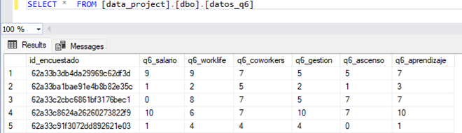

The road: from IT Support to Data Science
Hi, I'm Jonathan Mavo from Venezuela. I earned my degree in Systems Engineering and have been working in the tech field since 2020. Throughout my career, I've always been passionate
about problem-solving at both software and hardware levels, and I genuinely feel at home with technology. What drives me most is my constant desire to learn and push my knowledge
to optimal levels so I can apply it effectively in my daily work and projects.
The last couple of years have been fascinating with the incredible development in artificial intelligence. It seems like there's an AI tool for every activity now, and honestly, this
has opened doors for all of us to improve continuously. For someone like me who loves learning, AI has made it possible to go from understanding the basics of something completely
new to diving deep into complex topics. It's been a game-changer in how we approach learning and skill development.
For me, 2025 represents a pivotal year of advancement and growth. I'm excited and focused on achieving significant personal and professional development as I transition into data
analysis with the ultimate goal of moving into data science. My experience in tech has taught me to approach problems by finding the root cause, creating an action plan, and
implementing solutions that deliver real results. I believe this problem-solving mindset will be invaluable on my journey toward becoming a data scientist. This passion for
data-driven solutions led me to build my first personal data project, which you can find on my GitHub profile as "First-ETL-EDA-Project".
I keep my portfolio updated with my latest work, so feel free to explore what I've created. I hope my projects can inspire others who are also starting their journey in this exciting field.
Data Migration Process: From Single Table to Normalized Structure
This section details the crucial phase of processing and conditioning the raw data, a fundamental pillar for ensuring the reliability and validity of subsequent analyses in
this project. To carry out the cleaning, transformation, and preparation of the dataset, Microsoft SQL Server has been employed as the database management system. The following
will describe the specific procedures implemented through SQL queries for data manipulation, addressing the identification and treatment of inconsistencies, the standardization
of formats, and the creation of a data structure optimized for exploratory analysis and subsequent modeling. For a detailed look at all the code implemented, including the
complete .sql scripts and any associated .py files, please refer to my GitHub profile containing the repository for this project HERE.
While the repository contains the comprehensive scripts used for data processing, this section will present a more summarized and accessible overview of the key SQL operations
performed for data cleaning and preparation.
This project involved migrating survey data from a single source table (called: datos_iniciales) into a more organized, normalized database structure consisting of three separate
tables: datos_personales (personal data), datos_trabajo (work data), and datos_q6 (question 6 responses). The goal was to improve data organization and make the information
easier to manage and query.
The Migration Process
• Step 1: Personal Data Migration
The first step was straightforward - I successfully transferred personal information including respondent ID, gender, age, country, education level, and ethnicity from the source
table to the dedicated datos_personales (personal data) table. This migration completed without any issues.
• Step 2: Work Data Migration - The Challenge
When attempting to migrate work-related data to the datos_trabajo (work data) table, I encountered a significant technical obstacle. The salario (salary) column in my source table
was stored as text (VARCHAR), containing ranges like "0-40k" or "40k-80k", while our destination table expected numerical values (INT). This data type mismatch prevented the direct
transfer of salary information.
• Step 3: The Solution - Data Transformation
To resolve this compatibility issue, I implemented a multi-step solution:
1.- Python Data Processing: I developed a Python script to transform the salary ranges into numerical values. The script was designed to extract the highest
value from each salary range - for example, "0-40k" became 40000, and "40k-80k" became 80000. This approach ensured I captured the upper bound of each salary range as a single
integer value. You can find the complete script on my GitHub profile inside the repository.
2.- Data Export and Import: After processing the salary data with Python, I exported the transformed data as a CSV file using SQL Server Management Studio (SSMS).
However, during the import process, a new table called salarios_nuevo was inadvertently created instead of updating the existing structure.
• Step 4: Data Integration
Rather than starting over, I adapted my approach to work with the situation:
1.- Initial Data Transfer: I first inserted all work-related data except salaries from datos_iniciales to datos_trabajo, leaving the salary column empty temporarily.
2.- Data Verification: Before updating the salary values, I had to perform a verification query using an INNER JOIN between datos_trabajo and salarios_nuevo tables.
This allowed me to preview exactly which records would be updated and confirm the data looked correct.
3.- Final Update: Once verified, I then executed an UPDATE statement with an INNER JOIN to populate the salary column in datos_trabajo with the processed
numerical values from salarios_nuevo.
• Step 5: Question 6 Responses Migration
The final step involved transferring survey responses related to question 6 (Q6) to the datos_q6 table. This included satisfaction ratings ranging from 1 to 10 for salary, work-life balance,
coworkers, management, and promotion opportunities. This migration completed successfully without any data type conflicts.

Key Lessons Learned
This migration process provided valuable insights into database management and data transformation best practices:
- Data Type Planning and Schema Design: The salary column incompatibility taught us that thorough schema analysis is crucial before beginning any migration.
We learned to always compare source and destination table structures, paying special attention to data types, constraints, and formatting requirements. In future projects,
creating a mapping document that lists each column's source and destination types would prevent similar issues.
- Data Transformation Strategies: Working with salary ranges like "0-40k" demonstrated that real-world data often doesn't match our ideal database formats.
We discovered that having a data transformation toolkit (in this case, Python) is essential for handling these situations. The decision to take the upper bound of salary
ranges was a business logic choice that required careful consideration of how the data would be used in analysis.
- Verification and Testing Procedures: The verification SELECT statement with INNER JOIN proved invaluable. This step allowed us to catch potential issues
before making permanent changes to our data. We learned that every UPDATE or INSERT operation should be preceded by a corresponding SELECT statement to preview the changes.
This practice prevents data corruption and gives confidence in the migration process.
- Adaptability and Problem-Solving: When the import process accidentally created the salarios_nuevo table instead of updating our existing structure,
we could have started over. Instead, we adapted our approach and used this "mistake" as an opportunity to implement a more controlled update process. This flexibility
saved time and actually resulted in a more robust solution.
- Documentation and Communication: The detailed comments in our T-SQL code proved essential for understanding the process later. Documenting not just what
we did, but why we did it and what problems we encountered, creates valuable knowledge for future projects and team members.
- Incremental Migration Benefits: Breaking the migration into logical chunks (personal data, work data, survey data) made troubleshooting easier. When the
salary issue arose, it only affected the work data migration, leaving the other successful migrations intact. This modular approach reduced risk and made the overall
process more manageable.
The end result was a successfully normalized database structure that separates personal information, work details, and survey responses into logical, manageable tables while
maintaining data integrity throughout the process. More importantly, we developed a methodology for handling complex data migrations that can be applied to future projects.
Data Survey Dashboard
Initial data taken from this survey
This dashboard provides a snapshot from a mid-2022 survey of over 600 individuals in the data field, revealing that a significant majority, well over half, transitioned from other
careers into data. This underscores the sector's strong draw for professionals seeking new opportunities. Regarding the ease of entering the field, while the largest single group
perceived the difficulty as neutral, a notably larger portion of respondents reported facing challenges breaking in compared to those who found it relatively easy, suggesting that
the path, while popular, isn't without its hurdles for many.
Demographically, the survey highlights a striking gender imbalance, with male professionals comprising roughly three-quarters of the respondents. Geographically, while participants
hailed from various parts of the world, there was a pronounced concentration from the United States, which contributed the largest share of participants, with India also showing
strong representation. These characteristics paint a picture of a rapidly evolving field that is a major site of career change, yet one where demographic and geographic concentrations
are quite evident among this surveyed group.
Breakdown and Average happiness with various aspects
The survey respondents in the data field are predominantly young, with a vast majority aged between 20 and 39 years. This youthful demographic is also highly educated; a very large
proportion hold at least a Bachelor's degree, with a significant number having also attained Master's qualifications. In terms of roles, "Data Analyst" emerges as by far the most
common job title, representing a clear majority of participants. Furthermore, a considerable segment of respondents are students or currently seeking employment, which, combined with
the age and common job title, suggests a strong representation of individuals in the earlier stages of their data careers.
Regarding compensation, a substantial portion of these professionals report salaries falling within the lower to mid-range brackets presented, which appears consistent with the prevalence
of entry-level to mid-level roles and the younger age profile of the survey takers. When it comes to job satisfaction, the average happiness score reported is below the midpoint of the
provided scale. This suggests a moderate level of overall contentment, indicating that while many are entering and working in the field, there are identifiable areas within their professional
experience, potentially related to factors like salary, learning opportunities, or work-life balance, that could be improved to boost general workplace happiness.
Respondents industry, preferred language and most wanted aspects in new jobs
The survey reveals that data professionals are dispersed across various sectors. A significant portion represents a wide variety of industries where data analysis is actively applied,
such as e-commerce giants like Amazon optimizing supply chains, streaming services such as Netflix personalizing recommendations, or even within sports analytics for enhancing team performance.
Among the more specifically defined sectors from the survey, Technology still stands out as the most common industry, followed by Finance and Healthcare, illustrating the penetration of
data roles beyond traditional tech companies. In terms of technical skills, Python is overwhelmingly the most utilized programming language, with a substantial majority of respondents
favoring it. SQL, while its classification as a full-fledged programming language is sometimes debated, remains a vital skill for data manipulation and retrieval. R, on the other hand, sees
less frequent mainstream usage in the current market compared to Python, though companies often appreciate specialization or experience in this statistically-focused language, particularly in
academic or research-oriented roles.
When considering new job opportunities, financial incentives are a paramount concern for these data professionals, with "Better Salary" being the most frequently cited important
aspect by a very large margin. Beyond compensation, the desire for "Remote Work" options and a "Good Work/Life Balance" are also highly significant motivators, each being prioritized
by a considerable number of respondents. These preferences underscore a strong inclination towards roles that offer not only competitive pay but also flexibility and personal well-being,
reflecting common contemporary trends in the job market.
TL;DR
This series of information paints a comprehensive picture of individuals navigating the data field in mid-2022. The respondents are largely a young, highly educated demographic, with a
notable proportion having transitioned from other careers, predominantly identifying as male, and often working as Data Analysts. While Python is their primary programming language,
complemented by essential skills in SQL and specialized knowledge in languages like R, they are driven by the pursuit of better salaries and remote work, they also report a moderate
level of overall job satisfaction and perceive the entry into the field as having a notable degree of difficulty. Collectively, these insights from the Power BI presentation highlight
a dynamic and rapidly evolving career landscape, attracting new talent but also presenting distinct challenges and evolving employee expectations across a multitude of industries.
My day to day, updates and projects in:
Analysis Results & Technical Insights
Key Insights
Through the analysis of the survey data and the Power BI dashboard, several significant patterns and insights
emerged that provide valuable understanding of the tech workforce landscape:
- Salary Distribution Patterns: The data revealed interesting salary variations across different industries and geographical
locations. By converting the original salary ranges to numerical values, we were able to identify clear compensation trends that correlate
with factors such as education level, years of experience, and specific tech roles.
- Work Satisfaction Correlations: The survey responses (Question 6 data) showed compelling relationships between different
satisfaction factors. Employees who rated their salary satisfaction highly also tended to report better work-life balance scores, suggesting
these factors are interconnected rather than independent.
- Career Transition Insights: The data on career changes revealed patterns about professionals switching to tech roles,
providing insights into the growing trend of career pivots in the technology sector. This information is particularly relevant for
understanding workforce mobility and skill transferability.
- Industry and Role Distribution: The analysis uncovered the distribution of respondents across different tech industries
and job roles, highlighting which sectors are most represented and potentially indicating growth areas within the technology field.
Technical Process Learnings
The journey from raw CSV data to actionable insights provided valuable lessons in
data analysis best practices:
- Data Type Challenges as Learning Opportunities: The VARCHAR to INT conversion challenge with salary data taught me that real-world data
rarely comes in perfect formats. This experience reinforced the importance of data profiling and understanding source data thoroughly before designing
target schemas. The solution using Python for data transformation demonstrated how multiple tools can work together in a data pipeline.
- Tool Selection Strategy: This project highlighted the strengths of different tools at various stages. Python with Pandas excelled at
initial data exploration and transformation, T-SQL proved powerful for data migration and normalization, and Power BI delivered effective visualization
capabilities. Learning when to leverage each tool's strengths is crucial for efficient data workflows.
- Verification-First Approach: Implementing verification SELECT statements before executing UPDATE operations became a cornerstone of my
process. This practice prevented data corruption and built confidence in each migration step. It's a methodology I'll carry forward to all future data projects.
- Documentation as a Success Factor: The detailed commenting and documentation throughout the T-SQL scripts proved invaluable not just
for troubleshooting, but for understanding the logic weeks later. Good documentation transforms a one-time script into a reusable, maintainable solution.
- Incremental Migration Benefits: Breaking the data migration into logical chunks (personal data, work data, survey responses) made the
process more manageable and reduced risk. When issues arose with one component, other successful migrations remained intact, allowing for targeted problem-solving
rather than starting over.
These insights represent more than just data points and code solutions—they reflect a comprehensive understanding of both the analytical findings and the
technical journey required to extract meaningful value from raw data.